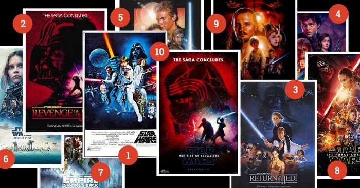

The Timeline of Recurrent Neural Networks and How to Use the Improvements in Tensorflow
Recurrent Neural Networks (RNNs) process the data as a sequence. Therefore, it is critical in applications where the order of the input provides information, e.g., music composition, speech recognition, handwriting recognition, etc. In this article, we review the timeline of RNNs’ evolution. I note significant improvements in historical order. You can also find the implementations of the contributions in TensorFlow (the version is 1.11.0).